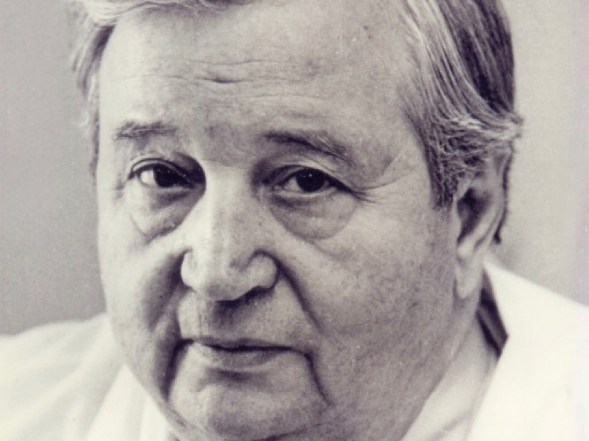

Родился 22 сентября 1918 года в местечке Понятовка Херсонской губернии. В 1940 году окончил лечебный факультет Одесского государственного медицинского института. С 1946 года — хирург, заведующий хирургическим отделением Березниковской городской больницы. В 1954 году, будучи спецпереселенцем без права выезда в Пермь, он сдавал кандидатский экзамен тайно, на маленькой станции Яйва, куда к нему специально приехали профессора. В 1956 году он защитил кандидатскую диссертацию на тему «Хирургическая тактика при проникающих ранениях груди в условиях мирного времени». С 1961 года — доцент кафедры госпитальной хирургии. В 1965 году стал заведующим кафедрой факультетской хирургии и одновременно проректором по научной работе ПГМИ. В 1966 году защитил докторскую диссертацию на тему «Материалы к изучению закрытых травм груди мирного времени». С 1970 по 1995 год — ректор ПГМИ (ПГМА), заведующий кафедрой госпитальной хирургии. С 1986 по 1998 год — действительный член АМН СССР.